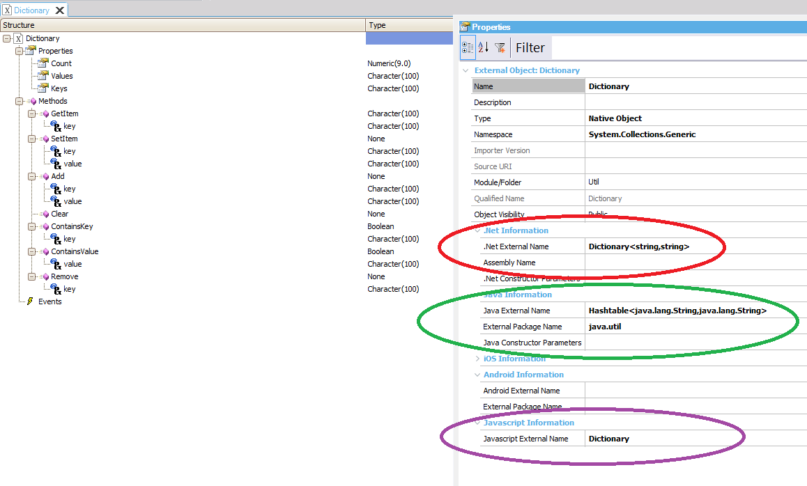
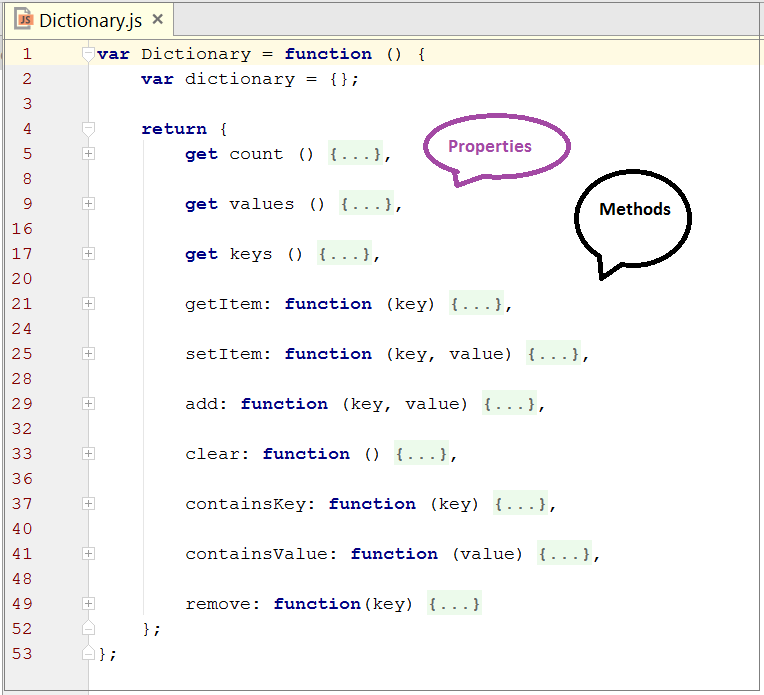
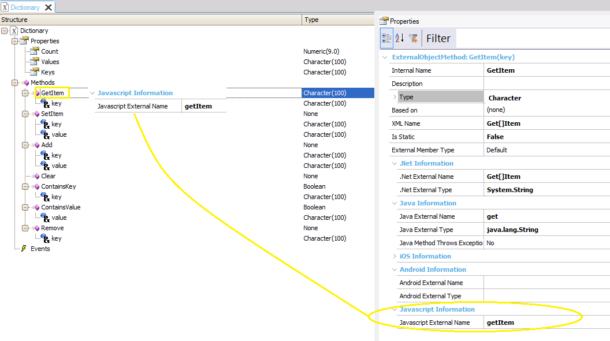

How to implement a dictionary data type using JS and server side code
Let's implement a dictionary (a data type composed of a collection of (key, value) pairs, so that each possible key appears just once in the collection). The operations associated with this data type include adding a pair to the collection, removing a pair from the collection, changing an existing pair and searching for a value associated with a particular key. This implementation is done using external resources, and the interaction is solved in GeneXus using External Objects. One of the most interesting aspects of this example is that it runs NET or Java code on the server-side and Javascript code on the client-side. See Event execution on the client and server side for details on this topic. So, if the code is generated server-side, it executes the NET or Java code (depending on the platform it runs); otherwise, if it's generated client-side, it executes the Javascript code. Purposes of this example
Note that this is an example of using a Native External Object, and the implementation of the solution is not the main aspect to consider. Some aspects to consider first: Server-side codeIn this case, the server-side code is part of the platform data type definitions. For the .NET Framework, it's the Dictionary data type (note that the namespace is System.Collections.Generic). For Java, the data type used is Hashtable. All this is reflected in the External object definition, in the .Net External Name and Java External Name properties. See the picture below. Client-side codeThe Javascript code is defined in this case as an external source (Dictionary.js) and it is referenced in the Javascript External Name property of the External Object. As in Javascript, an object is an associative array (called hash in some languages); it stores key-value pairs, so the JS source uses the Javascript object key list to implement the solution.
 Client-side definition of the EOFrom now on, let's focus on the client-side definition of the External Object. The Javascript source which defines the Dictionary object looks as follows (note the properties and method definitions to map them to the properties and methods definitions of the EO afterward).  To publish those properties and methods, we need to define them in the EO. get keys () { Note that this is an example and the JS code can be programmed in many different ways.
In the same manner, the methods to be published are defined in the EO. For example, GetItem is a non-static method, mapped to the getItem Javascript method (through the Javascript External Name property). getItem: function (key) { 
How to use the EO in GeneXus CodeFirst, to use the external JS resource, you have to add the reference to the HTML header, as shown in the code below:
Event Start
Form.HeaderRawHTML += '<script type="text/javascript" src="Dictionary.js"></script>'
EndEvent
Since the following code runs client-side, the Javascript is invoked to execute it:
Event "X"
&Dictionary.SetItem("Evolution3CodeName", "Tilo") //&Dictionary is a variable based on Dictionary EO data type.
&Dictionary.SetItem("GeneXus15CodeName", "Salto")
EndEvent
And the following, by definition, runs server-side, so it executes Java or Net depending on the platform.
Event "X"
For each Versions
//code here
Endfor
&Dictionary.SetItem("Evolution3CodeName", "Tilo")
&Dictionary.SetItem("GeneXus15CodeName", "Salto")
EndEvent
Download sample from Dictionary Sample.
|

| Backlinks | ||
| External Objects for Javascript | How to execute GeneXus events from JS code using External Objects | How to interact with the Window Object's Methods |